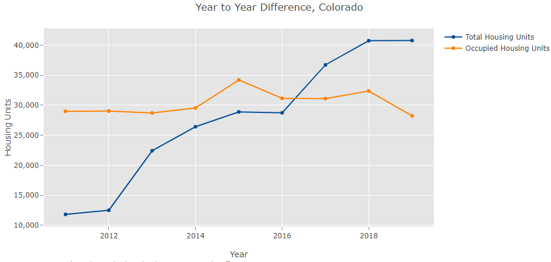
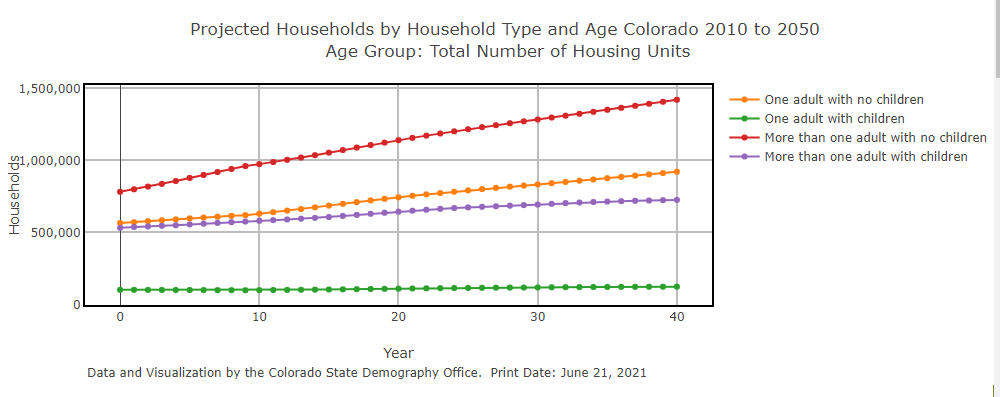

<!-- Housing Applications Secondary Page A Bickford 1/2022 -->
<div class= "sect-container">
   <div class="grid-item sect-panel_1_1">
      <a href="https://gis.dola.colorado.gov/apps/HousingDashboard/" title='Application showing plots of Total Housing Units, Occupied Housing Units, and Vacant Housing Units from 2010 to the current year. Questions? Click on the "Contact Us" link below to contact a SDO Demographer.'></a>
	  <a href="https://gis.dola.colorado.gov/apps/HousingDashboard/" title='Application showing plots of Total Housing Units, Occupied Housing Units, and Vacant Housing Units from 2010 to the current year. Questions? Click on the "Contact Us" link below to contact a SDO Demographer.'><p style="font-size:9pt;text-align:center;">Housing Dashboard</p></a>	
  </div>
  <div class="grid-item sect-panel_1_2">
      <a href="./hhbyage.html" title='Application providing charts showing household projections by age and household type from 2010 to 2050. Questions? Click on the "Contact Us" link below to contact a SDO Demographer.'></a>
	  <a href="./hhbyage.html" title='Application providing charts showing household projections by age and household type from 2010 to 2050. Questions? Click on the "Contact Us" link below to contact a SDO Demographer.'><p style="font-size:9pt;text-align:center;">Household Projections: Age and Household Type</p></a>
  </div>
  <div class="grid-item sect-panel_1_3">
  <p></p>
  </div>
  <div class="grid-item sect-panel_1_4">
	<p></p>
  </div>  
  <div class="grid-item sect-panel_1_5">	
    <p></p>
  </div>
  <div class="grid-item sect-panel_1_6">
	<p></p>
  </div>
</div> <!-- sect-container-->